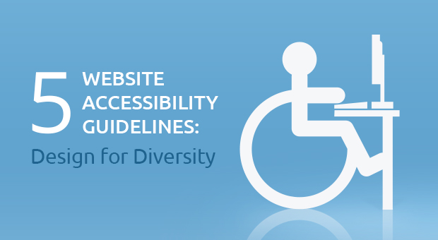

Design and Machine Learning
Part of my fourth year project for college. On flitering systems and designing a web tools for children and parents.

Introduction to Firebase
Talk in how to use and benfits of Firebase. Was done at Austin Texas meetup July 2016

College Notes and Answers
Notes, slides and answers for all the classes I took while doing computer science In Cork Institute of Technology
- 
Web Accessibility and OpenDyslexia
There are few published papers about usability testing with dyslexia focused fonts, but there is a considerable collection of knowledge on dyslexia as well as many suggestions for authoring dyslexia friendly interfaces.